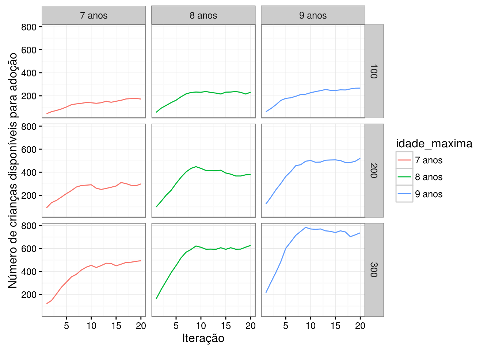
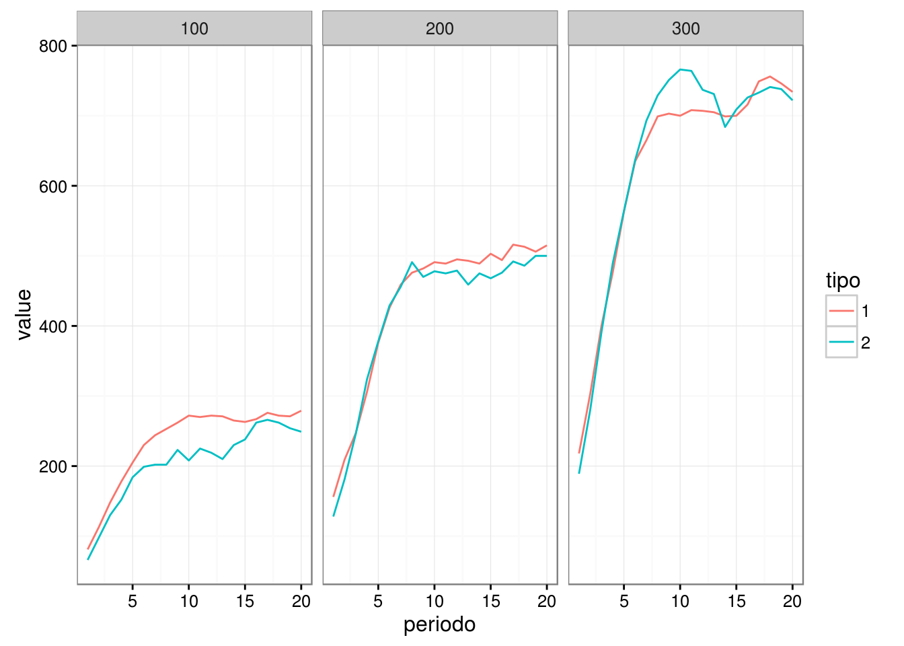
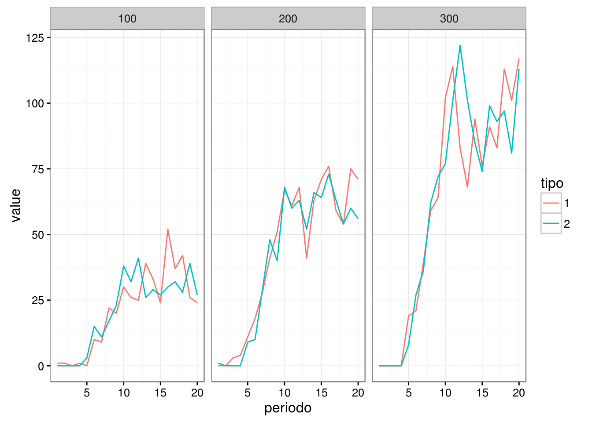

3.6 Exemplo - Cadastro Nacional de Adoção
Nesta sessão, estudaremos um modelo de simulação proposto pela Associação Brasileira de Jurimetria num relatório da série Justiça Pesquisa sobre os tempos de processos de adoção no Brasil.
O modelo em questão tinha como interesse estudar o impacto de uma redução na duração de processos de adoção no Cadastro Nacional de Adoção (CNA) do Conselho Nacional de Justiça.
Argumenta-se que, caso ocorresse uma diminuição na duração dos processos de adoção, a idade de entrada nas crianças no CNA também diminuiria. Como a maior parte dos pretendentes prefere adotar crianças mais jovens, o número de crianças adotadas tende a aumentar. Além disso, espera-se obter uma diminuição no número de crianças que atingem a maioridade.
A partir do contexto descrito acima, a modelagem desse problema pode ser realizada seguindo o roteiro proposto anteriormente.
3.6.1 Primeiros passos
Primeiramente justificamos o uso de um modelo de simulação, já que o problema envolve analisar o que acontece com o CNA no decorrer tempo. Além disso, como número de crianças adotadas depende de pareamentos entre pretendentes e crianças disponíveis no CNA, podemos estudar o impacto de diferentes estratégias de pareamento realizando poucas alterações no procedimento de simulação, o que torna essa abordagem computacionalmente atraente.
3.6.2 Estruturação
A segunda parte da modelagem consiste na resposta do questionário proposto anteriormente:
- Quais são as quantidades de interesse?
O número de crianças disponíveis no CNA e suas respectivas idades, o número de crianças que atingem a maioridade, o número de crianças adotadas num determinado período e o número de pretendentes à adoção e as idades máximas preferidas por cada um deles.
- Quais são as informações necessárias para calcular as quantidades de interesse?
O número de crianças que atingem a maioridade pode ser calculado a partir da idade das crianças cadastradas no período anterior.
O número de crianças adotadas pode ser obtido comparando as idades das crianças do período anterior com as idades máximas preferidas por cada pretendente no período anterior.
O número de pretendentes e suas preferências dependem da quantidade de pretendentes que se cadastram periodicamente no CNA e da distribuição desses novos pretendentes com relação à idades máximas preferidas.
O número de crianças disponíveis no CNA depende do número de crianças que foram adotadas, do número de crianças que são cadastradas periodicamente no CNA e da distribuição de idade dessas novas crianças.
- As quantidades de interesse variam no tempo? Como?
A simulação precisa atualizar os seus valores periodicamente, de forma que o período seguinte utilize informação de período anterior.
Os períodos analisados podem ser anos ou semestres.
- Qual a relação entre as quantidades de interesse?
Vamos definir, para cada período \(t\), as seguintes quantidades:
\[N(t) = \hbox{número de crianças disponíveis para adoção no instante } t \]
\[M(t) = \hbox{número de crianças adotadas no instante }t \]
\[D(t) = \hbox{número de crianças que atingiram a maioridade no instante }t \]
\[K(t) = \hbox{número de crianças que entram no cadastro no instante }t \]
\[P(t) = \hbox{número de pretendentes cadastrados no instante }t\]
\[P_i(t) = \hbox{número de pretendentes cadastrados no instante } t \] \[\hbox{que preferem crianças de idade até }i \]
\[N_i(t) = \hbox{número de crianças cadastradas de idade } \]
\[0 \leq i < 18\]
A relação fundamental entre essas quantidades é
\[N(t) = N(t-1)-M(t-1)-D(t-1)+K(t)\] \[N(t) = \sum_{i=0}^{17}N_i(t)\] \[P(t) = \sum_{i=0}^{17}P_i(t)\]
O número de adoções \(M(t)\) é calculado utilizando as idades das crianças adotadas, \(N_i(t)\), e as preferências dos pretendentes cadastrados no sistema, \(M_i(t)\), através de uma estratégia de pareamento.
Para viabilizar a aplicação do modelo vamos fazer algumas hipóteses sobre as quantidades descritas acima:
\(K(t)\) é dado por uma constante \(K\).
A distribuição de idades das \(K(t)\) crianças é a mesma encontrada nos dados.
\(P(t)\) é dado por uma constante \(P\).
A distribuição de preferências dos \(P(t)\) pretendentes é a mesma encontrada nos dados.
A estratégia de pareamento de crianças disponíveis e pretendentes é maximizar o número de adotados priorizando crianças mais velhas.
3.6.3 Dados
Anteriormente citamos que a distribuição de idades e de preferências seria obtida através de uma análise dos dados.
A distribuição observada de preferências de idades máximas, segundo um levantamento da ABJ, está descrita na tabela abaixo.
| Idade | Proporção |
|---|---|
| 0 | 14.78% |
| 1 | 18.33% |
| 2 | 19.74% |
| 3 | 18.79% |
| 4 | 10.56% |
| 5 | 9.81% |
| 6 | 3.62% |
| 7 | 1.76% |
| 8 | 0.95% |
| 9 | 0.32% |
| 10 | 0.66% |
| 11 | 0.15% |
| 12 | 0.2% |
| 13 | 0.07% |
| 14 | 0.05% |
| 15 | 0.06% |
| 16 | 0.03% |
| 17 | 0.12% |
Outra importante informação obtida através da análise de dados é a distribuição de idade das crianças cadastradas no CNA. Analisando a idade de entrada dos cadastrados, obtivemos as seguintes distribuições:

Note que, como cada uma destas distriuições está associada a uma causa de cadastro no CNA, vamos incluir a proporção de crianças registradas devido a processos de restituição familiar como um parâmetro do modelo. Por simplicidade, fixaremos este valor em 15%, equivalente à proporção observada no relatório supra citado.
O impacto de variações na distribuição de idades das crianças cadastradas no CNA será resumido no parâmetro que controla a localização da segunda “corcova” da distribuição de idades das crianças cadastradas no CNA após processos com restituição familiar.
Por fim, precisamos fixar os valores de \(K\) e \(P\). Para isso, fixaremos a razão \(\frac{K}{P}\) em \(3,52\), pois este número representa a razão do número total de crianças cadastradas no CNA, ativas ou inativas, pelo número total de pretendentes cadastrados no CNA, ativos ou inativos. Como \(P=3,52K\), vamos nos preocupar apenas variar o parâmetro \(K\).
3.6.4 Implementação
As simulações propriamente ditas serão realizadas utilizando programas desenvolvidos no software R.
Em linhas gerais, a implementação utilizará dois vetores. Um deles conterá as idades das crianças cadastradas e o outro conterá as idades máximas preferidas por cada pretendente cadastrado. A cada iteração, o vetor das crianças é atualizado retirando as crianças que foram adotadas ou que atingiram a maioridade e adicionando as novas crianças cadastradas no CNA. O vetor dos pretendentes é atualizado retirando aqueles que adotaram alguma criança e adicionando nos novos cadastrados.
Primeiramente, construíremos funções que sorteiem as idades das crianças que são registradas no CNA e preferências dos pretendenentes registrados no CNA.
#Sorteia n_pretendentes a partir de uma distribuição desejada. Por default, utiliza a distribuição disponível no relatório sobre adoção.
distr <- c(0.1478,0.1833,0.1974,0.1879,0.1056,0.0981,0.0362,
0.0176,0.0095,0.0032,0.0066,0.0015,0.0020,0.0007,
0.0005,0.0006,0.0003,0.0012)
sorteia_preferencias <- function(n_pretendentes, distribuicao = distr){
sapply(runif(n_pretendentes), function(x) {which.max(x < distribuicao) - 1})
}
#Sorteia n valores de uma mistura de normais limitada ao intervalo de 0 a 18.
tnorMix <- function(n,fit){
x <- nor1mix::rnorMix(n,fit)
while(x < 0 | x > 18){
x <- nor1mix::rnorMix(n,fit)
}
return(x)
}
#Sorteia n valores de uma distribuição gama limitada ao intervalo de 0 a 18.
trgamma <- function(n,shape,rate){
x <- rgamma(n,shape,rate)
while(x < 0 | x > 18){
x <- rgamma(n,shape,rate)
}
return(x)
}
#Sorteia as idades de n_criancas_para_adocao a partir das distribuições acima, utilizando um conjunto de parâmetros.
sorteia_idades <- function(n_criancas_para_adocao, shape, rate, mu1, mu2, sigma, p, peso = 0.5){
distr <- nor1mix::norMix(mu = c(mu1,mu2), sigma = rep(sigma,2), w = c(1-peso,peso))
sapply(runif(n_criancas_para_adocao), function(x){ifelse(x < p, ifelse(runif(1) < 0.5,trgamma(1,shape,rate),rexp(1)), tnorMix(1,distr))})
}A partir dessas funções, podemos inicializar os nossos vetores:
As listas inicializadas seguem abaixo
| idades | id |
|---|---|
| 0.2006772 | 1 |
| 9.7013161 | 2 |
| 3.6083768 | 3 |
| 2.0634004 | 4 |
| 4.1576919 | 5 |
| 1.5176869 | 6 |
| 5.6406676 | 7 |
| 3.2431550 | 8 |
| 5.6340124 | 9 |
| 4.5060209 | 10 |
| idade_maxima_preferida | id |
|---|---|
| 0 | 1 |
| 0 | 2 |
| 0 | 3 |
| 0 | 4 |
| 0 | 5 |
| 0 | 6 |
| 0 | 7 |
| 0 | 8 |
| 0 | 9 |
| 0 | 10 |
Para completar a inicialização e finalizar a implementação, precisamos desenvolver um algoritmo que maximize o número de matchs a partir de um conjunto de idades e preferências. O algoritmo abaixo cumpre esse papel, realizando uma varredura das idades ordenadas para checar a viabilidade da adoção de cada criança.
# Arredonda a idade das crianças cadastradas para baixo e ordena as idades arredondadas em ordem decrescente.
criancas_floor <- floor(sort(idades, decreasing = T))
# Ordena as idades máximas preferidas de cada pretendente em ordem decrescente.
pretendentes <- sort(pretendentes, decreasing = T)
# Ordena a idade das crianças cadastradas em ordem decrescente.
criancas <- sort(idades, decreasing = T)
# Contador que percorre o vetor de idades.
i = 1
# Inicialização do número de pareamentos.
num_match = 0
while(i <= length(criancas)){
#Se a idade arredondada da criança de maior idade for menor que a maior idade máxima tolerada por um pretendente, um pareamento é possível.
if(criancas_floor[i] <= pretendentes[1]){
#Remove a criança adotada do vetor de crianças
criancas <- criancas[-i]
#Remove a criança adotada do vetor de idades arredondadas
criancas_floor <- criancas_floor[-i]
#Remove o pretendente que adotou a criança dos pretendentes disponíveis
pretendentes <- pretendentes[-1]
#Conta um novo pareamento
num_match = num_match + 1
#O contador recua uma posição por conta da remoção da criança adotada
i <- i-1
}
#Continua a contagem
i <- i + 1
}Na verdade, este algoritmo pode ser melhorado se realizarmos uma adaptação na regra de pareamento. Não é necessário que a criança de maior idade seja pareada com o pretendente de maior idade máxima tolerada. Embora seja improvável, essa regra de pareamento pode produzir a adoção de uma criança de 10 anos por um pretendente que não se opõe a adotar jovens de até 17 anos. De certa forma, este tipo de pareamento é um “desperdício”, já que pretendentes com idades máximas toleradas grandes são mais raros, de forma que é mais interessante pareá-los com jovens mais velhos.
A adaptação sugerida no parágrafo anterior pode ser implementada da forma que segue, notando que, na função, as duas estratégias estão disponíveis na simulação através do parâmetro “tipo”.
matching <- function(pretendentes, criancas, tipo = 1){
criancas_floor <- floor(sort(criancas, decreasing = T))
pretendentes <- sort(pretendentes, decreasing = T)
criancas <- sort(criancas, decreasing = T)
i = 1
num_match = 0
while(i <= length(criancas)){
if(criancas_floor[i] <= pretendentes[1]){
j = 1
while(tipo == 2 & j != length(pretendentes) & criancas_floor[i]<=pretendentes[ifelse(j < length(pretendentes), j+1, length(pretendentes))]){
j = j + 1
}
criancas <- criancas[-i]
criancas_floor <- criancas_floor[-i]
pretendentes <- pretendentes[-j]
num_match = num_match + 1
i <- i-1
}
i <- i + 1
}
return(list(criancas,pretendentes, num_match))
}O exemplo abaixo ilustra o funcionamento dessas estratégias de pareamento.
p <- sorteia_preferencias(30)
idades <- sorteia_idades(30, 1.1, 0.15, 1, 9, 2.8, 0.1, 0.5)
print(sort(round(idades, 2), decreasing = T))## [1] 13.22 12.96 12.72 12.41 10.82 10.44 9.79 9.30 8.93 8.71 7.30
## [12] 7.13 7.03 6.66 6.59 6.51 5.29 4.98 4.66 3.55 3.32 3.01
## [23] 2.72 2.14 1.31 1.21 1.09 0.65 0.42 0.42print(sort(round(p, 2), decreasing = T))## [1] 2 1 1 1 0 0 0 0 0 0 0 0 0 0 0 0 0 0 0 0 0 0 0 0 0 0 0 0 0 0#Lista contendo o vetor de crianças e de pretendentes restantes.
pareamentos_estrategia_1 <- matching(p, idades, 1)
pareamentos_estrategia_2 <- matching(p, idades, 2)
print(pareamentos_estrategia_1)## [[1]]
## [1] 13.220144 12.963619 12.720426 12.409301 10.816369 10.435139 9.794466
## [8] 9.298955 8.934183 8.711584 7.295204 7.132229 7.025862 6.656854
## [15] 6.590421 6.507732 5.285900 4.983965 4.661280 3.550157 3.320593
## [22] 3.011672 2.139547
##
## [[2]]
## [1] 0 0 0 0 0 0 0 0 0 0 0 0 0 0 0 0 0 0 0 0 0 0 0
##
## [[3]]
## [1] 7print(pareamentos_estrategia_2)## [[1]]
## [1] 13.220144 12.963619 12.720426 12.409301 10.816369 10.435139 9.794466
## [8] 9.298955 8.934183 8.711584 7.295204 7.132229 7.025862 6.656854
## [15] 6.590421 6.507732 5.285900 4.983965 4.661280 3.550157 3.320593
## [22] 3.011672 2.139547
##
## [[2]]
## [1] 0 0 0 0 0 0 0 0 0 0 0 0 0 0 0 0 0 0 0 0 0 0 0
##
## [[3]]
## [1] 73.6.5 Análise dos resultados
Antes de proceder com a análise de resultados vamos responder às perguntas propostas anteriormente:
- Desejamos analisar o impacto de quais parâmetros?
A idade de entrada das crianças no CNA e as estratégias de pareamento de crianças e pretendentes.
- Quais são as variáveis sobre as quais desejamos analisar o impacto?
Desejamos a variação do número de crianças que atingem a maioridade ao longo do tempo, o número de crianças e pretendentes disponíveis e o número de adoções.
- O que a alteração dos parâmetros de interesse deve causar em cada variável?
Espera-se que uma menor idade de regitro no CNA diminua o número de crianças que atingem a maioridade, aumente o número de adoções e, consequentemente, diminuia o número de crianças disponíveis para adoção. Temos interesse especial em avaliar o tamanho dessas diminuições/acréscimos.
3.6.5.1 Idade de entrada no CNA
Desejamos checar se, conforme a idade de entrada no CNA diminui, o número de maiores de idade por iteração fica menor. Este é o caso, como se observa na figura abaixo.
maiores_de_idade <- function(tipo = 1, tempos = 1:10, K = 100, p_cada_tipo = 0.1, unidade = 1, idade_maxima = 9){
realiza_processo(tipo, tempos, K, p_cada_tipo, unidade, idade_maxima)$maiores_de_idade
}
expand.grid(K = c(100,200,300), idade_maxima = 7:9) %>% plyr:::mdply(maiores_de_idade, tempo = 1:20) %>%
reshape2::melt(id.vars = c('K','idade_maxima')) %>%
select(-variable) %>%
group_by(K, idade_maxima) %>%
mutate(periodo = 1:n()) %>%
ungroup() %>%
mutate(idade_maxima = paste0(idade_maxima,' anos')) %>%
ggplot(aes(x = periodo, y = value, color = idade_maxima))+
geom_line()+
facet_grid(K ~ idade_maxima)+
theme_bw()+
xlab('Iteração')+
ylab('Número de maiores de idade')
A diminuição no número de maiores de idade implica em mais crianças sendo adotadas ao longo do tempo, de forma que devemos verificar uma diminuição nesta variável também. O resultado deste teste segue na figura abaixo.
criancas_disponiveis <- function(tipo = 1, tempos = 1:10, K = 100, p_cada_tipo = 0.1, unidade = 1, idade_maxima = 9){
realiza_processo(tipo, tempos, K, p_cada_tipo, unidade, idade_maxima)$criancas_disponiveis
}
expand.grid(K = c(100,200,300), idade_maxima = 7:9) %>% plyr:::mdply(criancas_disponiveis, tempo = 1:20) %>%
reshape2::melt(id.vars = c('K','idade_maxima')) %>%
select(-variable) %>%
group_by(K, idade_maxima) %>%
mutate(periodo = 1:n()) %>%
ungroup() %>%
mutate(idade_maxima = paste0(idade_maxima,' anos')) %>%
ggplot(aes(x = periodo, y = value, color = idade_maxima))+
geom_line()+
facet_grid(K ~ idade_maxima)+
theme_bw()+
xlab('Iteração')+
ylab('Número de crianças disponíveis para adoção')
Por fim, uma diminuição na idade das crianças cadastradas no CNA deve favorecer a ocorrência de um maior número de pareamentos entre pretendentes e crianças, considerando que grande parte dos pretendentes prefere crianças mais jovens.
numero_de_pareamentos <- function(tipo = 1, tempos = 1:10, K = 100, p_cada_tipo = 0.1, unidade = 1, idade_maxima = 9){
realiza_processo(tipo, tempos, K, p_cada_tipo, unidade, idade_maxima)$numero_de_pareamentos
}
expand.grid(K = c(100,200,300), idade_maxima = 7:9) %>% plyr:::mdply(numero_de_pareamentos, tempo = 1:20) %>%
reshape2::melt(id.vars = c('K','idade_maxima')) %>%
select(-variable) %>%
group_by(K, idade_maxima) %>%
mutate(periodo = 1:n()) %>%
ungroup() %>%
mutate(idade_maxima = paste0(idade_maxima,' anos')) %>%
ggplot(aes(x = periodo, y = value, color = idade_maxima))+
geom_line()+
facet_grid(K ~ idade_maxima)+
theme_bw()+
xlab('Iteração')+
ylab('Número de pareamentos')
3.6.5.2 Estratégia utilizada
O número de pareamentos certamente é invariante com relação à estratégia utilizada, já que a diferença entre os dois métodos está apenas em qual pretendente será escolhido.
Por outro lado, o número de crianças disponíveis pode diminuir conforme pretendentes menos restritivos forem sendo preteridos. A figura abaixo sugere que este efeito não é sentido. Isso deve-se, provavelmente, a distância entre a idade máxima tolerada pelos pretendentes e as idades das crianças cadastradas.
expand.grid(tipo = 1:2 , K = c(100,200,300)) %>% plyr:::mdply(criancas_disponiveis, tempo = 1:20) %>%
reshape2::melt(id.vars = c('tipo','K')) %>%
select(-variable) %>%
group_by(tipo, K) %>%
mutate(periodo = 1:n()) %>%
ungroup() %>%
mutate(tipo = factor(tipo)) %>%
ggplot(aes(x = periodo, y = value, fill = tipo, color = tipo))+
geom_line()+
facet_wrap(~K)+
theme_bw()
expand.grid(tipo = 1:2 , K = c(100,200,300)) %>% plyr:::mdply(maiores_de_idade, tempo = 1:20) %>%
reshape2::melt(id.vars = c('tipo','K')) %>%
select(-variable) %>%
group_by(tipo, K) %>%
mutate(periodo = 1:n()) %>%
ungroup() %>%
mutate(tipo = factor(tipo)) %>%
ggplot(aes(x = periodo, y = value, fill = tipo, color = tipo))+
geom_line()+
facet_wrap(~K)+
theme_bw()